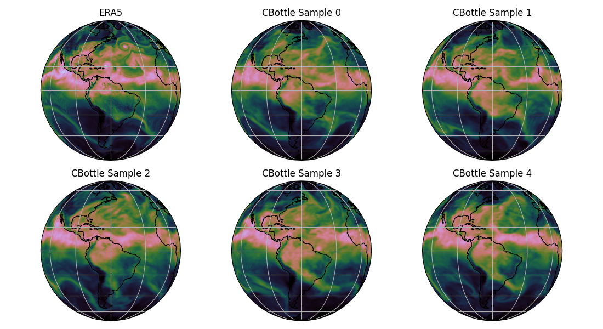
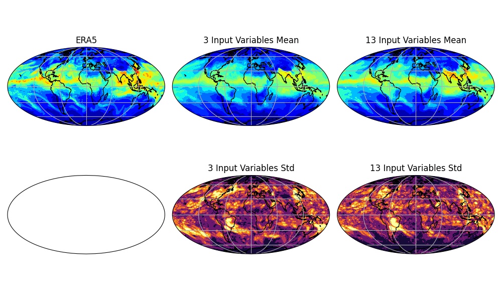

Note
Go to the end to download the full example code.
CBottle Data Generation and Infilling#
Climate in a Bottle (cBottle) inference workflows for global weather data synthesis.
This example will demonstrate the cBottle diffusion model data source and infilling diagnostic model for generating global climate and weather data. Both the cBottle data source and infilling diagnostic use the same diffusion model but the sampling procedure is different enabling two unique modes of interaction.
For more information on cBottle see:
In this example you will learn:
Generating synthetic climate data with cBottle data source
Instantiating cBottle infill diagnostic model
Creating a simple infilling inference workflow
# /// script
# dependencies = [
# "earth2studio[cbottle] @ git+https://github.com/NVIDIA/earth2studio.git@0.13.0",
# "cartopy",
# ]
# ///
Set Up#
For this example we will use the cBottle data source and infill diagnostic. Unlike other data sources the cBottle3D data source needs to be loaded similar to a prognostic or diagnostic model.
Thus, we need the following:
Datasource: Generate data from the CBottle3D data api
earth2studio.data.CBottle3D.Datasource: Pull data from the WeatherBench2 data api
earth2studio.data.WB2ERA5.Diagnostic Model: Use the built in CBottle Infill Model
earth2studio.models.dx.CBottleInfill.
import os
os.makedirs("outputs", exist_ok=True)
from dotenv import load_dotenv
load_dotenv() # TODO: make common example prep function
import torch
from earth2studio.data import WB2ERA5, CBottle3D
from earth2studio.models.dx import CBottleInfill
# Load the default model package which downloads the check point from NGC
package = CBottle3D.load_default_package()
cbottle_ds = CBottle3D.load_model(package, seed=None)
# This is an AI data source, so also move it to device
device = torch.device("cuda" if torch.cuda.is_available() else "cpu")
cbottle_ds = cbottle_ds.to(device)
# Create the ground truth data source
era5_ds = WB2ERA5()
Downloading training-state-000512000.checkpoint: 0%| | 0.00/568M [00:00<?, ?B/s]
Downloading training-state-000512000.checkpoint: 2%|▏ | 10.0M/568M [00:00<00:14, 39.3MB/s]
Downloading training-state-000512000.checkpoint: 5%|▌ | 30.0M/568M [00:00<00:05, 98.5MB/s]
Downloading training-state-000512000.checkpoint: 11%|█ | 60.0M/568M [00:00<00:03, 160MB/s]
Downloading training-state-000512000.checkpoint: 16%|█▌ | 90.0M/568M [00:00<00:02, 205MB/s]
Downloading training-state-000512000.checkpoint: 21%|██ | 120M/568M [00:00<00:01, 236MB/s]
Downloading training-state-000512000.checkpoint: 26%|██▋ | 150M/568M [00:00<00:01, 256MB/s]
Downloading training-state-000512000.checkpoint: 32%|███▏ | 180M/568M [00:00<00:01, 273MB/s]
Downloading training-state-000512000.checkpoint: 39%|███▊ | 220M/568M [00:01<00:01, 288MB/s]
Downloading training-state-000512000.checkpoint: 44%|████▍ | 250M/568M [00:01<00:01, 295MB/s]
Downloading training-state-000512000.checkpoint: 51%|█████ | 290M/568M [00:01<00:00, 303MB/s]
Downloading training-state-000512000.checkpoint: 56%|█████▋ | 320M/568M [00:01<00:00, 301MB/s]
Downloading training-state-000512000.checkpoint: 62%|██████▏ | 350M/568M [00:01<00:00, 299MB/s]
Downloading training-state-000512000.checkpoint: 69%|██████▊ | 390M/568M [00:01<00:00, 305MB/s]
Downloading training-state-000512000.checkpoint: 76%|███████▌ | 430M/568M [00:01<00:00, 310MB/s]
Downloading training-state-000512000.checkpoint: 83%|████████▎ | 470M/568M [00:01<00:00, 313MB/s]
Downloading training-state-000512000.checkpoint: 90%|████████▉ | 510M/568M [00:02<00:00, 314MB/s]
Downloading training-state-000512000.checkpoint: 97%|█████████▋| 550M/568M [00:02<00:00, 316MB/s]
Downloading training-state-000512000.checkpoint: 100%|██████████| 568M/568M [00:02<00:00, 271MB/s]
Downloading training-state-002048000.checkpoint: 0%| | 0.00/568M [00:00<?, ?B/s]
Downloading training-state-002048000.checkpoint: 2%|▏ | 10.0M/568M [00:00<00:21, 27.8MB/s]
Downloading training-state-002048000.checkpoint: 5%|▌ | 30.0M/568M [00:00<00:07, 77.3MB/s]
Downloading training-state-002048000.checkpoint: 11%|█ | 60.0M/568M [00:00<00:03, 140MB/s]
Downloading training-state-002048000.checkpoint: 18%|█▊ | 100M/568M [00:00<00:02, 201MB/s]
Downloading training-state-002048000.checkpoint: 25%|██▍ | 140M/568M [00:00<00:01, 240MB/s]
Downloading training-state-002048000.checkpoint: 30%|██▉ | 170M/568M [00:00<00:01, 259MB/s]
Downloading training-state-002048000.checkpoint: 35%|███▌ | 200M/568M [00:01<00:01, 267MB/s]
Downloading training-state-002048000.checkpoint: 41%|████ | 230M/568M [00:01<00:01, 273MB/s]
Downloading training-state-002048000.checkpoint: 46%|████▌ | 260M/568M [00:01<00:01, 278MB/s]
Downloading training-state-002048000.checkpoint: 51%|█████ | 290M/568M [00:01<00:01, 286MB/s]
Downloading training-state-002048000.checkpoint: 58%|█████▊ | 330M/568M [00:01<00:00, 300MB/s]
Downloading training-state-002048000.checkpoint: 65%|██████▌ | 370M/568M [00:01<00:00, 307MB/s]
Downloading training-state-002048000.checkpoint: 72%|███████▏ | 410M/568M [00:01<00:00, 312MB/s]
Downloading training-state-002048000.checkpoint: 79%|███████▉ | 450M/568M [00:01<00:00, 316MB/s]
Downloading training-state-002048000.checkpoint: 86%|████████▋ | 490M/568M [00:02<00:00, 318MB/s]
Downloading training-state-002048000.checkpoint: 93%|█████████▎| 530M/568M [00:02<00:00, 321MB/s]
Downloading training-state-002048000.checkpoint: 100%|██████████| 568M/568M [00:02<00:00, 323MB/s]
Downloading training-state-002048000.checkpoint: 100%|██████████| 568M/568M [00:02<00:00, 261MB/s]
Downloading training-state-009856000.checkpoint: 0%| | 0.00/1.66G [00:00<?, ?B/s]
Downloading training-state-009856000.checkpoint: 1%| | 10.0M/1.66G [00:00<00:24, 71.2MB/s]
Downloading training-state-009856000.checkpoint: 3%|▎ | 50.0M/1.66G [00:00<00:08, 212MB/s]
Downloading training-state-009856000.checkpoint: 5%|▌ | 90.0M/1.66G [00:00<00:06, 262MB/s]
Downloading training-state-009856000.checkpoint: 8%|▊ | 130M/1.66G [00:00<00:05, 288MB/s]
Downloading training-state-009856000.checkpoint: 10%|▉ | 170M/1.66G [00:00<00:05, 302MB/s]
Downloading training-state-009856000.checkpoint: 12%|█▏ | 210M/1.66G [00:00<00:05, 310MB/s]
Downloading training-state-009856000.checkpoint: 15%|█▍ | 250M/1.66G [00:00<00:04, 315MB/s]
Downloading training-state-009856000.checkpoint: 17%|█▋ | 290M/1.66G [00:01<00:04, 317MB/s]
Downloading training-state-009856000.checkpoint: 19%|█▉ | 330M/1.66G [00:01<00:04, 320MB/s]
Downloading training-state-009856000.checkpoint: 22%|██▏ | 370M/1.66G [00:01<00:04, 317MB/s]
Downloading training-state-009856000.checkpoint: 24%|██▍ | 410M/1.66G [00:01<00:04, 319MB/s]
Downloading training-state-009856000.checkpoint: 26%|██▋ | 450M/1.66G [00:01<00:04, 321MB/s]
Downloading training-state-009856000.checkpoint: 29%|██▉ | 490M/1.66G [00:01<00:03, 323MB/s]
Downloading training-state-009856000.checkpoint: 31%|███ | 530M/1.66G [00:01<00:03, 324MB/s]
Downloading training-state-009856000.checkpoint: 33%|███▎ | 570M/1.66G [00:01<00:03, 324MB/s]
Downloading training-state-009856000.checkpoint: 36%|███▌ | 610M/1.66G [00:02<00:03, 325MB/s]
Downloading training-state-009856000.checkpoint: 38%|███▊ | 650M/1.66G [00:02<00:03, 325MB/s]
Downloading training-state-009856000.checkpoint: 40%|████ | 690M/1.66G [00:02<00:03, 325MB/s]
Downloading training-state-009856000.checkpoint: 43%|████▎ | 730M/1.66G [00:02<00:03, 328MB/s]
Downloading training-state-009856000.checkpoint: 45%|████▌ | 770M/1.66G [00:02<00:02, 329MB/s]
Downloading training-state-009856000.checkpoint: 48%|████▊ | 810M/1.66G [00:02<00:02, 329MB/s]
Downloading training-state-009856000.checkpoint: 50%|████▉ | 850M/1.66G [00:02<00:02, 328MB/s]
Downloading training-state-009856000.checkpoint: 52%|█████▏ | 890M/1.66G [00:02<00:02, 326MB/s]
Downloading training-state-009856000.checkpoint: 55%|█████▍ | 930M/1.66G [00:03<00:02, 327MB/s]
Downloading training-state-009856000.checkpoint: 57%|█████▋ | 970M/1.66G [00:03<00:02, 328MB/s]
Downloading training-state-009856000.checkpoint: 59%|█████▉ | 0.99G/1.66G [00:03<00:02, 329MB/s]
Downloading training-state-009856000.checkpoint: 62%|██████▏ | 1.03G/1.66G [00:03<00:02, 328MB/s]
Downloading training-state-009856000.checkpoint: 64%|██████▍ | 1.06G/1.66G [00:03<00:01, 328MB/s]
Downloading training-state-009856000.checkpoint: 66%|██████▋ | 1.10G/1.66G [00:03<00:01, 328MB/s]
Downloading training-state-009856000.checkpoint: 69%|██████▊ | 1.14G/1.66G [00:03<00:01, 327MB/s]
Downloading training-state-009856000.checkpoint: 71%|███████ | 1.18G/1.66G [00:03<00:01, 334MB/s]
Downloading training-state-009856000.checkpoint: 73%|███████▎ | 1.22G/1.66G [00:04<00:01, 344MB/s]
Downloading training-state-009856000.checkpoint: 76%|███████▌ | 1.26G/1.66G [00:04<00:01, 352MB/s]
Downloading training-state-009856000.checkpoint: 78%|███████▊ | 1.30G/1.66G [00:04<00:01, 356MB/s]
Downloading training-state-009856000.checkpoint: 80%|████████ | 1.34G/1.66G [00:04<00:00, 359MB/s]
Downloading training-state-009856000.checkpoint: 83%|████████▎ | 1.38G/1.66G [00:04<00:00, 364MB/s]
Downloading training-state-009856000.checkpoint: 85%|████████▌ | 1.42G/1.66G [00:04<00:00, 364MB/s]
Downloading training-state-009856000.checkpoint: 87%|████████▋ | 1.46G/1.66G [00:04<00:00, 368MB/s]
Downloading training-state-009856000.checkpoint: 90%|████████▉ | 1.49G/1.66G [00:04<00:00, 370MB/s]
Downloading training-state-009856000.checkpoint: 92%|█████████▏| 1.53G/1.66G [00:05<00:00, 368MB/s]
Downloading training-state-009856000.checkpoint: 94%|█████████▍| 1.57G/1.66G [00:05<00:00, 369MB/s]
Downloading training-state-009856000.checkpoint: 97%|█████████▋| 1.61G/1.66G [00:05<00:00, 369MB/s]
Downloading training-state-009856000.checkpoint: 99%|█████████▉| 1.65G/1.66G [00:05<00:00, 368MB/s]
Downloading training-state-009856000.checkpoint: 100%|██████████| 1.66G/1.66G [00:05<00:00, 331MB/s]
Downloading config.json: 0%| | 0.00/25.0 [00:00<?, ?B/s]
Downloading config.json: 100%|██████████| 25.0/25.0 [00:00<00:00, 245B/s]
Downloading config.json: 100%|██████████| 25.0/25.0 [00:00<00:00, 243B/s]
Downloading amip_midmonth_sst.nc: 0%| | 0.00/454M [00:00<?, ?B/s]
Downloading amip_midmonth_sst.nc: 2%|▏ | 10.0M/454M [00:00<00:09, 49.7MB/s]
Downloading amip_midmonth_sst.nc: 7%|▋ | 30.0M/454M [00:00<00:04, 103MB/s]
Downloading amip_midmonth_sst.nc: 13%|█▎ | 60.0M/454M [00:00<00:02, 171MB/s]
Downloading amip_midmonth_sst.nc: 20%|█▉ | 90.0M/454M [00:00<00:01, 212MB/s]
Downloading amip_midmonth_sst.nc: 26%|██▋ | 120M/454M [00:00<00:01, 234MB/s]
Downloading amip_midmonth_sst.nc: 33%|███▎ | 150M/454M [00:00<00:01, 249MB/s]
Downloading amip_midmonth_sst.nc: 40%|███▉ | 180M/454M [00:00<00:01, 261MB/s]
Downloading amip_midmonth_sst.nc: 48%|████▊ | 220M/454M [00:01<00:00, 282MB/s]
Downloading amip_midmonth_sst.nc: 57%|█████▋ | 260M/454M [00:01<00:00, 294MB/s]
Downloading amip_midmonth_sst.nc: 66%|██████▌ | 300M/454M [00:01<00:00, 303MB/s]
Downloading amip_midmonth_sst.nc: 75%|███████▍ | 340M/454M [00:01<00:00, 311MB/s]
Downloading amip_midmonth_sst.nc: 84%|████████▎ | 380M/454M [00:01<00:00, 316MB/s]
Downloading amip_midmonth_sst.nc: 92%|█████████▏| 420M/454M [00:01<00:00, 319MB/s]
Downloading amip_midmonth_sst.nc: 100%|██████████| 454M/454M [00:01<00:00, 320MB/s]
Downloading amip_midmonth_sst.nc: 100%|██████████| 454M/454M [00:01<00:00, 268MB/s]
Generating Synthetic Weather Data#
Once loaded, generating data from cBottle is as easy as any other data source. Under the hood the model is conditioned on the timestamp requested as well as a mid-month SST field which is internally handle for users but limits the range of the data source to years between 1970 and 2022.
Note that this diffusion model is stochastic, so querying the same timestamp will generate different fields that are reflective of the requested time and SST state.
from datetime import datetime
n_samples = 5
timestamp = datetime(2022, 9, 5)
# Fetch the ground truth
era5_da = era5_ds([timestamp], ["msl", "tcwv"])
# Generate some samples from cBottle
cbottle_da = cbottle_ds([timestamp for i in range(n_samples)], ["msl", "tcwv"])
print(era5_da)
print(cbottle_da)
Fetching WB2 data: 0%| | 0/2 [00:00<?, ?it/s]
2026-03-19 08:25:39.909 | DEBUG | earth2studio.data.wb2:fetch_array:241 - Fetching WB2 zarr array for variable: tcwv at 2022-09-05T00:00:00
Fetching WB2 data: 0%| | 0/2 [00:00<?, ?it/s]
2026-03-19 08:25:39.910 | DEBUG | earth2studio.data.wb2:fetch_array:241 - Fetching WB2 zarr array for variable: msl at 2022-09-05T00:00:00
Fetching WB2 data: 0%| | 0/2 [00:00<?, ?it/s]
2026-03-19 08:25:39.958 | DEBUG | earth2studio.data.utils:_make_local_details:770 - Copying /weatherbench2/datasets/era5/1959-2023_01_10-wb13-6h-1440x721_with_derived_variables.zarr/mean_sea_level_pressure/93032.0.0 to local cache
Fetching WB2 data: 0%| | 0/2 [00:00<?, ?it/s]
2026-03-19 08:25:39.995 | DEBUG | earth2studio.data.utils:_make_local_details:770 - Copying /weatherbench2/datasets/era5/1959-2023_01_10-wb13-6h-1440x721_with_derived_variables.zarr/total_column_water_vapour/93032.0.0 to local cache
Fetching WB2 data: 0%| | 0/2 [00:00<?, ?it/s]
Fetching WB2 data: 50%|█████ | 1/2 [00:00<00:00, 3.37it/s]
Fetching WB2 data: 100%|██████████| 2/2 [00:00<00:00, 5.10it/s]
Fetching WB2 data: 100%|██████████| 2/2 [00:00<00:00, 4.73it/s]
Generating cBottle Data: 0%| | 0/2 [00:00<?, ?it/s]
Generating cBottle Data: 50%|█████ | 1/2 [00:09<00:09, 9.97s/it]
Generating cBottle Data: 100%|██████████| 2/2 [00:15<00:00, 7.17s/it]
Generating cBottle Data: 100%|██████████| 2/2 [00:15<00:00, 7.59s/it]
<xarray.DataArray (time: 1, variable: 2, lat: 721, lon: 1440)> Size: 17MB
array([[[[1.01743422e+05, 1.01743422e+05, 1.01743422e+05, ...,
1.01743422e+05, 1.01743422e+05, 1.01743422e+05],
[1.01793445e+05, 1.01793289e+05, 1.01793289e+05, ...,
1.01794055e+05, 1.01793750e+05, 1.01793750e+05],
[1.01839055e+05, 1.01838445e+05, 1.01838297e+05, ...,
1.01839969e+05, 1.01839508e+05, 1.01839203e+05],
...,
[1.00018555e+05, 1.00018555e+05, 1.00018555e+05, ...,
1.00017945e+05, 1.00017945e+05, 1.00018250e+05],
[9.98792891e+04, 9.98789844e+04, 9.98789844e+04, ...,
9.98786797e+04, 9.98789844e+04, 9.98789844e+04],
[9.98712266e+04, 9.98712266e+04, 9.98712266e+04, ...,
9.98712266e+04, 9.98712266e+04, 9.98712266e+04]],
[[1.33166103e+01, 1.33166103e+01, 1.33166103e+01, ...,
1.33166103e+01, 1.33166103e+01, 1.33166103e+01],
[1.31231613e+01, 1.31231613e+01, 1.31231613e+01, ...,
1.31190758e+01, 1.31217995e+01, 1.31217995e+01],
[1.28479767e+01, 1.28479767e+01, 1.28493385e+01, ...,
1.28357162e+01, 1.28384399e+01, 1.28425274e+01],
...,
[2.75253296e-01, 2.75253296e-01, 2.75253296e-01, ...,
2.75253296e-01, 2.75253296e-01, 2.75253296e-01],
[2.75253296e-01, 2.75253296e-01, 2.75253296e-01, ...,
2.75253296e-01, 2.75253296e-01, 2.75253296e-01],
[2.73891449e-01, 2.73891449e-01, 2.73891449e-01, ...,
2.73891449e-01, 2.73891449e-01, 2.73891449e-01]]]])
Coordinates:
* time (time) datetime64[ns] 8B 2022-09-05
* variable (variable) <U4 32B 'msl' 'tcwv'
* lat (lat) float64 6kB 90.0 89.75 89.5 89.25 ... -89.5 -89.75 -90.0
* lon (lon) float64 12kB 0.0 0.25 0.5 0.75 ... 359.0 359.2 359.5 359.8
<xarray.DataArray (time: 5, variable: 2, lat: 721, lon: 1440)> Size: 83MB
array([[[[ 1.00847501e+05, 1.00847501e+05, 1.00847501e+05, ...,
1.00847501e+05, 1.00847501e+05, 1.00847501e+05],
[ 1.00837448e+05, 1.00836990e+05, 1.00836532e+05, ...,
1.00838821e+05, 1.00838363e+05, 1.00837905e+05],
[ 1.00827395e+05, 1.00826479e+05, 1.00825564e+05, ...,
1.00830141e+05, 1.00829225e+05, 1.00828310e+05],
...,
[ 1.00373232e+05, 1.00372761e+05, 1.00372289e+05, ...,
1.00374647e+05, 1.00374176e+05, 1.00373704e+05],
[ 1.00394021e+05, 1.00393785e+05, 1.00393549e+05, ...,
1.00394728e+05, 1.00394492e+05, 1.00394257e+05],
[ 1.00414809e+05, 1.00414809e+05, 1.00414809e+05, ...,
1.00414809e+05, 1.00414809e+05, 1.00414809e+05]],
[[ 9.93866086e+00, 9.93866086e+00, 9.93866086e+00, ...,
9.93866086e+00, 9.93866086e+00, 9.93866086e+00],
[ 9.51572431e+00, 9.51544396e+00, 9.51516361e+00, ...,
9.51656535e+00, 9.51628500e+00, 9.51600466e+00],
[ 9.09278776e+00, 9.09222707e+00, 9.09166637e+00, ...,
9.09446985e+00, 9.09390915e+00, 9.09334846e+00],
...
[ 1.01684648e+05, 1.01684350e+05, 1.01684053e+05, ...,
1.01685541e+05, 1.01685243e+05, 1.01684946e+05],
[ 1.01625136e+05, 1.01624987e+05, 1.01624838e+05, ...,
1.01625583e+05, 1.01625434e+05, 1.01625285e+05],
[ 1.01565624e+05, 1.01565624e+05, 1.01565624e+05, ...,
1.01565624e+05, 1.01565624e+05, 1.01565624e+05]],
[[ 7.63604493e+00, 7.63604493e+00, 7.63604493e+00, ...,
7.63604493e+00, 7.63604493e+00, 7.63604493e+00],
[ 7.44507826e+00, 7.44187273e+00, 7.43866720e+00, ...,
7.45469484e+00, 7.45148932e+00, 7.44828379e+00],
[ 7.25411158e+00, 7.24770053e+00, 7.24128947e+00, ...,
7.27334475e+00, 7.26693370e+00, 7.26052264e+00],
...,
[-7.46499812e-02, -7.36596315e-02, -7.26692818e-02, ...,
-7.76210303e-02, -7.66306806e-02, -7.56403309e-02],
[ 3.74854997e-01, 3.75350172e-01, 3.75845347e-01, ...,
3.73369472e-01, 3.73864647e-01, 3.74359822e-01],
[ 8.24359975e-01, 8.24359975e-01, 8.24359975e-01, ...,
8.24359975e-01, 8.24359975e-01, 8.24359975e-01]]]])
Coordinates:
* time (time) datetime64[ns] 40B 2022-09-05 2022-09-05 ... 2022-09-05
* variable (variable) <U4 32B 'msl' 'tcwv'
* lat (lat) float64 6kB 90.0 89.75 89.5 89.25 ... -89.5 -89.75 -90.0
* lon (lon) float64 12kB 0.0 0.25 0.5 0.75 ... 359.0 359.2 359.5 359.8
Post Processing CBottle Data#
Let’s visualize this data to better understand what the cBottle data source is able to provide. It is clear that each sample is indeed unique, yet remains physically realizable. In other words the cBottle data source can be used to create climates that do not exist but could based on the conditional distribution learned from the training data.
import cartopy.crs as ccrs
import matplotlib.pyplot as plt
variable = "tcwv"
plt.close("all")
projection = ccrs.Orthographic(central_longitude=300.0)
# Create a figure and axes with the specified projection
fig, ax = plt.subplots(2, 3, subplot_kw={"projection": projection}, figsize=(11, 6))
ax = ax.flatten()
ax[0].pcolormesh(
era5_da.coords["lon"],
era5_da.coords["lat"],
era5_da.sel(variable=variable).isel(time=0),
transform=ccrs.PlateCarree(),
cmap="cubehelix",
)
ax[0].set_title("ERA5")
for i in range(n_samples):
ax[i + 1].pcolormesh(
cbottle_da.coords["lon"],
cbottle_da.coords["lat"],
cbottle_da.sel(variable=variable).isel(time=i),
transform=ccrs.PlateCarree(),
cmap="cubehelix",
vmin=0,
vmax=90,
)
ax[i + 1].set_title(f"CBottle Sample {i}")
for ax0 in ax:
ax0.coastlines()
ax0.gridlines()
plt.tight_layout()
plt.savefig("outputs/15_tcwv_cbottle_datasource.jpg")

Variable Infilling with CBottleInfill Diagnostic#
Next lets look at using the same model but for variable infilling. CBottleInfill allows users to generate global weather fields like the data source but condition it on a set of input fields that can be configured. This means that this diagnostic is extremely flexible and can be used with all types of data sources and models.
To demonstrate this lets consider two instances of the infilling diagnostic with a different set of inputs and then compare the resulting infilled variables. Note that the outputs of both configurations are the same size with the same variables.
import numpy as np
from earth2studio.data.utils import fetch_data
# Input variables
input_variables = ["u10m", "v10m"]
# Load the default model package which downloads the check point from NGC
package = CBottleInfill.load_default_package()
model = CBottleInfill.load_model(package, input_variables=input_variables)
model = model.to(device)
torch.manual_seed(0)
torch.cuda.manual_seed(0)
times = np.array([timestamp] * n_samples, dtype="datetime64[ns]")
x, coords = fetch_data(era5_ds, times, input_variables, device=device)
output_0, output_coords = model(x, coords)
print(output_0.shape)
Fetching WB2 data: 0%| | 0/10 [00:00<?, ?it/s]
2026-03-19 08:26:16.247 | DEBUG | earth2studio.data.wb2:fetch_array:241 - Fetching WB2 zarr array for variable: u10m at 2022-09-05T00:00:00
Fetching WB2 data: 0%| | 0/10 [00:00<?, ?it/s]
2026-03-19 08:26:16.247 | DEBUG | earth2studio.data.wb2:fetch_array:241 - Fetching WB2 zarr array for variable: u10m at 2022-09-05T00:00:00
Fetching WB2 data: 0%| | 0/10 [00:00<?, ?it/s]
2026-03-19 08:26:16.248 | DEBUG | earth2studio.data.wb2:fetch_array:241 - Fetching WB2 zarr array for variable: u10m at 2022-09-05T00:00:00
Fetching WB2 data: 0%| | 0/10 [00:00<?, ?it/s]
2026-03-19 08:26:16.248 | DEBUG | earth2studio.data.wb2:fetch_array:241 - Fetching WB2 zarr array for variable: v10m at 2022-09-05T00:00:00
Fetching WB2 data: 0%| | 0/10 [00:00<?, ?it/s]
2026-03-19 08:26:16.248 | DEBUG | earth2studio.data.wb2:fetch_array:241 - Fetching WB2 zarr array for variable: v10m at 2022-09-05T00:00:00
Fetching WB2 data: 0%| | 0/10 [00:00<?, ?it/s]
2026-03-19 08:26:16.248 | DEBUG | earth2studio.data.wb2:fetch_array:241 - Fetching WB2 zarr array for variable: v10m at 2022-09-05T00:00:00
Fetching WB2 data: 0%| | 0/10 [00:00<?, ?it/s]
2026-03-19 08:26:16.249 | DEBUG | earth2studio.data.wb2:fetch_array:241 - Fetching WB2 zarr array for variable: v10m at 2022-09-05T00:00:00
Fetching WB2 data: 0%| | 0/10 [00:00<?, ?it/s]
2026-03-19 08:26:16.249 | DEBUG | earth2studio.data.wb2:fetch_array:241 - Fetching WB2 zarr array for variable: u10m at 2022-09-05T00:00:00
Fetching WB2 data: 0%| | 0/10 [00:00<?, ?it/s]
2026-03-19 08:26:16.249 | DEBUG | earth2studio.data.wb2:fetch_array:241 - Fetching WB2 zarr array for variable: v10m at 2022-09-05T00:00:00
Fetching WB2 data: 0%| | 0/10 [00:00<?, ?it/s]
2026-03-19 08:26:16.250 | DEBUG | earth2studio.data.wb2:fetch_array:241 - Fetching WB2 zarr array for variable: u10m at 2022-09-05T00:00:00
Fetching WB2 data: 0%| | 0/10 [00:00<?, ?it/s]
2026-03-19 08:26:16.333 | DEBUG | earth2studio.data.utils:_make_local_details:770 - Copying /weatherbench2/datasets/era5/1959-2023_01_10-wb13-6h-1440x721_with_derived_variables.zarr/10m_u_component_of_wind/93032.0.0 to local cache
Fetching WB2 data: 0%| | 0/10 [00:00<?, ?it/s]
2026-03-19 08:26:16.334 | DEBUG | earth2studio.data.utils:_make_local_details:770 - Copying /weatherbench2/datasets/era5/1959-2023_01_10-wb13-6h-1440x721_with_derived_variables.zarr/10m_u_component_of_wind/93032.0.0 to local cache
Fetching WB2 data: 0%| | 0/10 [00:00<?, ?it/s]
2026-03-19 08:26:16.335 | DEBUG | earth2studio.data.utils:_make_local_details:770 - Copying /weatherbench2/datasets/era5/1959-2023_01_10-wb13-6h-1440x721_with_derived_variables.zarr/10m_u_component_of_wind/93032.0.0 to local cache
Fetching WB2 data: 0%| | 0/10 [00:00<?, ?it/s]
2026-03-19 08:26:16.365 | DEBUG | earth2studio.data.utils:_make_local_details:770 - Copying /weatherbench2/datasets/era5/1959-2023_01_10-wb13-6h-1440x721_with_derived_variables.zarr/10m_v_component_of_wind/93032.0.0 to local cache
Fetching WB2 data: 0%| | 0/10 [00:00<?, ?it/s]
2026-03-19 08:26:16.366 | DEBUG | earth2studio.data.utils:_make_local_details:770 - Copying /weatherbench2/datasets/era5/1959-2023_01_10-wb13-6h-1440x721_with_derived_variables.zarr/10m_v_component_of_wind/93032.0.0 to local cache
Fetching WB2 data: 0%| | 0/10 [00:00<?, ?it/s]
2026-03-19 08:26:16.378 | DEBUG | earth2studio.data.utils:_make_local_details:770 - Copying /weatherbench2/datasets/era5/1959-2023_01_10-wb13-6h-1440x721_with_derived_variables.zarr/10m_u_component_of_wind/93032.0.0 to local cache
Fetching WB2 data: 0%| | 0/10 [00:00<?, ?it/s]
2026-03-19 08:26:16.385 | DEBUG | earth2studio.data.utils:_make_local_details:770 - Copying /weatherbench2/datasets/era5/1959-2023_01_10-wb13-6h-1440x721_with_derived_variables.zarr/10m_u_component_of_wind/93032.0.0 to local cache
Fetching WB2 data: 0%| | 0/10 [00:00<?, ?it/s]
2026-03-19 08:26:16.416 | DEBUG | earth2studio.data.utils:_make_local_details:770 - Copying /weatherbench2/datasets/era5/1959-2023_01_10-wb13-6h-1440x721_with_derived_variables.zarr/10m_v_component_of_wind/93032.0.0 to local cache
Fetching WB2 data: 0%| | 0/10 [00:00<?, ?it/s]
2026-03-19 08:26:16.417 | DEBUG | earth2studio.data.utils:_make_local_details:770 - Copying /weatherbench2/datasets/era5/1959-2023_01_10-wb13-6h-1440x721_with_derived_variables.zarr/10m_v_component_of_wind/93032.0.0 to local cache
Fetching WB2 data: 0%| | 0/10 [00:00<?, ?it/s]
2026-03-19 08:26:16.420 | DEBUG | earth2studio.data.utils:_make_local_details:770 - Copying /weatherbench2/datasets/era5/1959-2023_01_10-wb13-6h-1440x721_with_derived_variables.zarr/10m_v_component_of_wind/93032.0.0 to local cache
Fetching WB2 data: 0%| | 0/10 [00:00<?, ?it/s]
Fetching WB2 data: 10%|█ | 1/10 [00:00<00:01, 4.55it/s]
Fetching WB2 data: 40%|████ | 4/10 [00:00<00:00, 11.52it/s]
Fetching WB2 data: 100%|██████████| 10/10 [00:00<00:00, 21.71it/s]
torch.Size([5, 1, 45, 721, 1440])
Now repeat the process above but with an expanded set of variables. In this instance we provide a lot more data to the model to condition it with more information.
input_variables = [
"u10m",
"v10m",
"t2m",
"msl",
"z50",
"u50",
"v50",
"z500",
"u500",
"v500",
"z1000",
"u1000",
"v1000",
]
# Load the default model package which downloads the check point from NGC
package = CBottleInfill.load_default_package()
model = CBottleInfill.load_model(package, input_variables=input_variables)
model = model.to(device)
torch.manual_seed(0)
torch.cuda.manual_seed(0)
x, coords = fetch_data(era5_ds, times, input_variables, device=device)
output_1, output_coords = model(x, coords)
print(output_1.shape)
Fetching WB2 data: 0%| | 0/65 [00:00<?, ?it/s]
2026-03-19 08:26:32.136 | DEBUG | earth2studio.data.wb2:fetch_array:241 - Fetching WB2 zarr array for variable: u500 at 2022-09-05T00:00:00
Fetching WB2 data: 0%| | 0/65 [00:00<?, ?it/s]
2026-03-19 08:26:32.137 | DEBUG | earth2studio.data.wb2:fetch_array:241 - Fetching WB2 zarr array for variable: z50 at 2022-09-05T00:00:00
Fetching WB2 data: 0%| | 0/65 [00:00<?, ?it/s]
2026-03-19 08:26:32.137 | DEBUG | earth2studio.data.wb2:fetch_array:241 - Fetching WB2 zarr array for variable: u10m at 2022-09-05T00:00:00
Fetching WB2 data: 0%| | 0/65 [00:00<?, ?it/s]
2026-03-19 08:26:32.138 | DEBUG | earth2studio.data.wb2:fetch_array:241 - Fetching WB2 zarr array for variable: u1000 at 2022-09-05T00:00:00
Fetching WB2 data: 0%| | 0/65 [00:00<?, ?it/s]
2026-03-19 08:26:32.138 | DEBUG | earth2studio.data.wb2:fetch_array:241 - Fetching WB2 zarr array for variable: z500 at 2022-09-05T00:00:00
Fetching WB2 data: 0%| | 0/65 [00:00<?, ?it/s]
2026-03-19 08:26:32.138 | DEBUG | earth2studio.data.wb2:fetch_array:241 - Fetching WB2 zarr array for variable: z1000 at 2022-09-05T00:00:00
Fetching WB2 data: 0%| | 0/65 [00:00<?, ?it/s]
2026-03-19 08:26:32.139 | DEBUG | earth2studio.data.wb2:fetch_array:241 - Fetching WB2 zarr array for variable: u500 at 2022-09-05T00:00:00
Fetching WB2 data: 0%| | 0/65 [00:00<?, ?it/s]
2026-03-19 08:26:32.139 | DEBUG | earth2studio.data.wb2:fetch_array:241 - Fetching WB2 zarr array for variable: msl at 2022-09-05T00:00:00
Fetching WB2 data: 0%| | 0/65 [00:00<?, ?it/s]
2026-03-19 08:26:32.139 | DEBUG | earth2studio.data.wb2:fetch_array:241 - Fetching WB2 zarr array for variable: u50 at 2022-09-05T00:00:00
Fetching WB2 data: 0%| | 0/65 [00:00<?, ?it/s]
2026-03-19 08:26:32.140 | DEBUG | earth2studio.data.wb2:fetch_array:241 - Fetching WB2 zarr array for variable: t2m at 2022-09-05T00:00:00
Fetching WB2 data: 0%| | 0/65 [00:00<?, ?it/s]
2026-03-19 08:26:32.140 | DEBUG | earth2studio.data.wb2:fetch_array:241 - Fetching WB2 zarr array for variable: v50 at 2022-09-05T00:00:00
Fetching WB2 data: 0%| | 0/65 [00:00<?, ?it/s]
2026-03-19 08:26:32.140 | DEBUG | earth2studio.data.wb2:fetch_array:241 - Fetching WB2 zarr array for variable: u10m at 2022-09-05T00:00:00
Fetching WB2 data: 0%| | 0/65 [00:00<?, ?it/s]
2026-03-19 08:26:32.140 | DEBUG | earth2studio.data.wb2:fetch_array:241 - Fetching WB2 zarr array for variable: z1000 at 2022-09-05T00:00:00
Fetching WB2 data: 0%| | 0/65 [00:00<?, ?it/s]
2026-03-19 08:26:32.141 | DEBUG | earth2studio.data.wb2:fetch_array:241 - Fetching WB2 zarr array for variable: z1000 at 2022-09-05T00:00:00
Fetching WB2 data: 0%| | 0/65 [00:00<?, ?it/s]
2026-03-19 08:26:32.141 | DEBUG | earth2studio.data.wb2:fetch_array:241 - Fetching WB2 zarr array for variable: t2m at 2022-09-05T00:00:00
Fetching WB2 data: 0%| | 0/65 [00:00<?, ?it/s]
2026-03-19 08:26:32.141 | DEBUG | earth2studio.data.wb2:fetch_array:241 - Fetching WB2 zarr array for variable: v50 at 2022-09-05T00:00:00
Fetching WB2 data: 0%| | 0/65 [00:00<?, ?it/s]
2026-03-19 08:26:32.142 | DEBUG | earth2studio.data.wb2:fetch_array:241 - Fetching WB2 zarr array for variable: v10m at 2022-09-05T00:00:00
Fetching WB2 data: 0%| | 0/65 [00:00<?, ?it/s]
2026-03-19 08:26:32.142 | DEBUG | earth2studio.data.wb2:fetch_array:241 - Fetching WB2 zarr array for variable: z500 at 2022-09-05T00:00:00
Fetching WB2 data: 0%| | 0/65 [00:00<?, ?it/s]
2026-03-19 08:26:32.142 | DEBUG | earth2studio.data.wb2:fetch_array:241 - Fetching WB2 zarr array for variable: v50 at 2022-09-05T00:00:00
Fetching WB2 data: 0%| | 0/65 [00:00<?, ?it/s]
2026-03-19 08:26:32.142 | DEBUG | earth2studio.data.wb2:fetch_array:241 - Fetching WB2 zarr array for variable: v1000 at 2022-09-05T00:00:00
Fetching WB2 data: 0%| | 0/65 [00:00<?, ?it/s]
2026-03-19 08:26:32.143 | DEBUG | earth2studio.data.wb2:fetch_array:241 - Fetching WB2 zarr array for variable: z500 at 2022-09-05T00:00:00
Fetching WB2 data: 0%| | 0/65 [00:00<?, ?it/s]
2026-03-19 08:26:32.143 | DEBUG | earth2studio.data.wb2:fetch_array:241 - Fetching WB2 zarr array for variable: v10m at 2022-09-05T00:00:00
Fetching WB2 data: 0%| | 0/65 [00:00<?, ?it/s]
2026-03-19 08:26:32.143 | DEBUG | earth2studio.data.wb2:fetch_array:241 - Fetching WB2 zarr array for variable: u1000 at 2022-09-05T00:00:00
Fetching WB2 data: 0%| | 0/65 [00:00<?, ?it/s]
2026-03-19 08:26:32.143 | DEBUG | earth2studio.data.wb2:fetch_array:241 - Fetching WB2 zarr array for variable: v10m at 2022-09-05T00:00:00
Fetching WB2 data: 0%| | 0/65 [00:00<?, ?it/s]
2026-03-19 08:26:32.144 | DEBUG | earth2studio.data.wb2:fetch_array:241 - Fetching WB2 zarr array for variable: u500 at 2022-09-05T00:00:00
Fetching WB2 data: 0%| | 0/65 [00:00<?, ?it/s]
2026-03-19 08:26:32.144 | DEBUG | earth2studio.data.wb2:fetch_array:241 - Fetching WB2 zarr array for variable: msl at 2022-09-05T00:00:00
Fetching WB2 data: 0%| | 0/65 [00:00<?, ?it/s]
2026-03-19 08:26:32.144 | DEBUG | earth2studio.data.wb2:fetch_array:241 - Fetching WB2 zarr array for variable: z50 at 2022-09-05T00:00:00
Fetching WB2 data: 0%| | 0/65 [00:00<?, ?it/s]
2026-03-19 08:26:32.145 | DEBUG | earth2studio.data.wb2:fetch_array:241 - Fetching WB2 zarr array for variable: v500 at 2022-09-05T00:00:00
Fetching WB2 data: 0%| | 0/65 [00:00<?, ?it/s]
2026-03-19 08:26:32.145 | DEBUG | earth2studio.data.wb2:fetch_array:241 - Fetching WB2 zarr array for variable: u1000 at 2022-09-05T00:00:00
Fetching WB2 data: 0%| | 0/65 [00:00<?, ?it/s]
2026-03-19 08:26:32.145 | DEBUG | earth2studio.data.wb2:fetch_array:241 - Fetching WB2 zarr array for variable: v50 at 2022-09-05T00:00:00
Fetching WB2 data: 0%| | 0/65 [00:00<?, ?it/s]
2026-03-19 08:26:32.145 | DEBUG | earth2studio.data.wb2:fetch_array:241 - Fetching WB2 zarr array for variable: v1000 at 2022-09-05T00:00:00
Fetching WB2 data: 0%| | 0/65 [00:00<?, ?it/s]
2026-03-19 08:26:32.146 | DEBUG | earth2studio.data.wb2:fetch_array:241 - Fetching WB2 zarr array for variable: v500 at 2022-09-05T00:00:00
Fetching WB2 data: 0%| | 0/65 [00:00<?, ?it/s]
2026-03-19 08:26:32.146 | DEBUG | earth2studio.data.wb2:fetch_array:241 - Fetching WB2 zarr array for variable: v1000 at 2022-09-05T00:00:00
Fetching WB2 data: 0%| | 0/65 [00:00<?, ?it/s]
2026-03-19 08:26:32.146 | DEBUG | earth2studio.data.wb2:fetch_array:241 - Fetching WB2 zarr array for variable: v10m at 2022-09-05T00:00:00
Fetching WB2 data: 0%| | 0/65 [00:00<?, ?it/s]
2026-03-19 08:26:32.146 | DEBUG | earth2studio.data.wb2:fetch_array:241 - Fetching WB2 zarr array for variable: v1000 at 2022-09-05T00:00:00
Fetching WB2 data: 0%| | 0/65 [00:00<?, ?it/s]
2026-03-19 08:26:32.147 | DEBUG | earth2studio.data.wb2:fetch_array:241 - Fetching WB2 zarr array for variable: z1000 at 2022-09-05T00:00:00
Fetching WB2 data: 0%| | 0/65 [00:00<?, ?it/s]
2026-03-19 08:26:32.147 | DEBUG | earth2studio.data.wb2:fetch_array:241 - Fetching WB2 zarr array for variable: v10m at 2022-09-05T00:00:00
Fetching WB2 data: 0%| | 0/65 [00:00<?, ?it/s]
2026-03-19 08:26:32.147 | DEBUG | earth2studio.data.wb2:fetch_array:241 - Fetching WB2 zarr array for variable: u10m at 2022-09-05T00:00:00
Fetching WB2 data: 0%| | 0/65 [00:00<?, ?it/s]
2026-03-19 08:26:32.148 | DEBUG | earth2studio.data.wb2:fetch_array:241 - Fetching WB2 zarr array for variable: t2m at 2022-09-05T00:00:00
Fetching WB2 data: 0%| | 0/65 [00:00<?, ?it/s]
2026-03-19 08:26:32.148 | DEBUG | earth2studio.data.wb2:fetch_array:241 - Fetching WB2 zarr array for variable: z50 at 2022-09-05T00:00:00
Fetching WB2 data: 0%| | 0/65 [00:00<?, ?it/s]
2026-03-19 08:26:32.148 | DEBUG | earth2studio.data.wb2:fetch_array:241 - Fetching WB2 zarr array for variable: u1000 at 2022-09-05T00:00:00
Fetching WB2 data: 0%| | 0/65 [00:00<?, ?it/s]
2026-03-19 08:26:32.148 | DEBUG | earth2studio.data.wb2:fetch_array:241 - Fetching WB2 zarr array for variable: t2m at 2022-09-05T00:00:00
Fetching WB2 data: 0%| | 0/65 [00:00<?, ?it/s]
2026-03-19 08:26:32.149 | DEBUG | earth2studio.data.wb2:fetch_array:241 - Fetching WB2 zarr array for variable: v1000 at 2022-09-05T00:00:00
Fetching WB2 data: 0%| | 0/65 [00:00<?, ?it/s]
2026-03-19 08:26:32.149 | DEBUG | earth2studio.data.wb2:fetch_array:241 - Fetching WB2 zarr array for variable: u500 at 2022-09-05T00:00:00
Fetching WB2 data: 0%| | 0/65 [00:00<?, ?it/s]
2026-03-19 08:26:32.149 | DEBUG | earth2studio.data.wb2:fetch_array:241 - Fetching WB2 zarr array for variable: msl at 2022-09-05T00:00:00
Fetching WB2 data: 0%| | 0/65 [00:00<?, ?it/s]
2026-03-19 08:26:32.149 | DEBUG | earth2studio.data.wb2:fetch_array:241 - Fetching WB2 zarr array for variable: u50 at 2022-09-05T00:00:00
Fetching WB2 data: 0%| | 0/65 [00:00<?, ?it/s]
2026-03-19 08:26:32.150 | DEBUG | earth2studio.data.wb2:fetch_array:241 - Fetching WB2 zarr array for variable: z500 at 2022-09-05T00:00:00
Fetching WB2 data: 0%| | 0/65 [00:00<?, ?it/s]
2026-03-19 08:26:32.150 | DEBUG | earth2studio.data.wb2:fetch_array:241 - Fetching WB2 zarr array for variable: z1000 at 2022-09-05T00:00:00
Fetching WB2 data: 0%| | 0/65 [00:00<?, ?it/s]
2026-03-19 08:26:32.150 | DEBUG | earth2studio.data.wb2:fetch_array:241 - Fetching WB2 zarr array for variable: u10m at 2022-09-05T00:00:00
Fetching WB2 data: 0%| | 0/65 [00:00<?, ?it/s]
2026-03-19 08:26:32.151 | DEBUG | earth2studio.data.wb2:fetch_array:241 - Fetching WB2 zarr array for variable: v500 at 2022-09-05T00:00:00
Fetching WB2 data: 0%| | 0/65 [00:00<?, ?it/s]
2026-03-19 08:26:32.151 | DEBUG | earth2studio.data.wb2:fetch_array:241 - Fetching WB2 zarr array for variable: u1000 at 2022-09-05T00:00:00
Fetching WB2 data: 0%| | 0/65 [00:00<?, ?it/s]
2026-03-19 08:26:32.151 | DEBUG | earth2studio.data.wb2:fetch_array:241 - Fetching WB2 zarr array for variable: z500 at 2022-09-05T00:00:00
Fetching WB2 data: 0%| | 0/65 [00:00<?, ?it/s]
2026-03-19 08:26:32.151 | DEBUG | earth2studio.data.wb2:fetch_array:241 - Fetching WB2 zarr array for variable: z50 at 2022-09-05T00:00:00
Fetching WB2 data: 0%| | 0/65 [00:00<?, ?it/s]
2026-03-19 08:26:32.152 | DEBUG | earth2studio.data.wb2:fetch_array:241 - Fetching WB2 zarr array for variable: msl at 2022-09-05T00:00:00
Fetching WB2 data: 0%| | 0/65 [00:00<?, ?it/s]
2026-03-19 08:26:32.152 | DEBUG | earth2studio.data.wb2:fetch_array:241 - Fetching WB2 zarr array for variable: u50 at 2022-09-05T00:00:00
Fetching WB2 data: 0%| | 0/65 [00:00<?, ?it/s]
2026-03-19 08:26:32.152 | DEBUG | earth2studio.data.wb2:fetch_array:241 - Fetching WB2 zarr array for variable: u50 at 2022-09-05T00:00:00
Fetching WB2 data: 0%| | 0/65 [00:00<?, ?it/s]
2026-03-19 08:26:32.152 | DEBUG | earth2studio.data.wb2:fetch_array:241 - Fetching WB2 zarr array for variable: v50 at 2022-09-05T00:00:00
Fetching WB2 data: 0%| | 0/65 [00:00<?, ?it/s]
2026-03-19 08:26:32.153 | DEBUG | earth2studio.data.wb2:fetch_array:241 - Fetching WB2 zarr array for variable: t2m at 2022-09-05T00:00:00
Fetching WB2 data: 0%| | 0/65 [00:00<?, ?it/s]
2026-03-19 08:26:32.153 | DEBUG | earth2studio.data.wb2:fetch_array:241 - Fetching WB2 zarr array for variable: v500 at 2022-09-05T00:00:00
Fetching WB2 data: 0%| | 0/65 [00:00<?, ?it/s]
2026-03-19 08:26:32.153 | DEBUG | earth2studio.data.wb2:fetch_array:241 - Fetching WB2 zarr array for variable: msl at 2022-09-05T00:00:00
Fetching WB2 data: 0%| | 0/65 [00:00<?, ?it/s]
2026-03-19 08:26:32.153 | DEBUG | earth2studio.data.wb2:fetch_array:241 - Fetching WB2 zarr array for variable: u50 at 2022-09-05T00:00:00
Fetching WB2 data: 0%| | 0/65 [00:00<?, ?it/s]
2026-03-19 08:26:32.154 | DEBUG | earth2studio.data.wb2:fetch_array:241 - Fetching WB2 zarr array for variable: u10m at 2022-09-05T00:00:00
Fetching WB2 data: 0%| | 0/65 [00:00<?, ?it/s]
2026-03-19 08:26:32.154 | DEBUG | earth2studio.data.wb2:fetch_array:241 - Fetching WB2 zarr array for variable: z50 at 2022-09-05T00:00:00
Fetching WB2 data: 0%| | 0/65 [00:00<?, ?it/s]
2026-03-19 08:26:32.154 | DEBUG | earth2studio.data.wb2:fetch_array:241 - Fetching WB2 zarr array for variable: u500 at 2022-09-05T00:00:00
Fetching WB2 data: 0%| | 0/65 [00:00<?, ?it/s]
2026-03-19 08:26:32.155 | DEBUG | earth2studio.data.wb2:fetch_array:241 - Fetching WB2 zarr array for variable: v500 at 2022-09-05T00:00:00
Fetching WB2 data: 0%| | 0/65 [00:00<?, ?it/s]
Fetching WB2 data: 2%|▏ | 1/65 [00:00<00:06, 9.44it/s]
2026-03-19 08:26:32.300 | DEBUG | earth2studio.data.utils:_make_local_details:770 - Copying /weatherbench2/datasets/era5/1959-2023_01_10-wb13-6h-1440x721_with_derived_variables.zarr/2m_temperature/93032.0.0 to local cache
Fetching WB2 data: 2%|▏ | 1/65 [00:00<00:06, 9.44it/s]
2026-03-19 08:26:32.312 | DEBUG | earth2studio.data.utils:_make_local_details:770 - Copying /weatherbench2/datasets/era5/1959-2023_01_10-wb13-6h-1440x721_with_derived_variables.zarr/2m_temperature/93032.0.0 to local cache
Fetching WB2 data: 2%|▏ | 1/65 [00:00<00:06, 9.44it/s]
2026-03-19 08:26:32.315 | DEBUG | earth2studio.data.utils:_make_local_details:770 - Copying /weatherbench2/datasets/era5/1959-2023_01_10-wb13-6h-1440x721_with_derived_variables.zarr/v_component_of_wind/93032.0.0.0 to local cache
Fetching WB2 data: 2%|▏ | 1/65 [00:00<00:06, 9.44it/s]
2026-03-19 08:26:32.316 | DEBUG | earth2studio.data.utils:_make_local_details:770 - Copying /weatherbench2/datasets/era5/1959-2023_01_10-wb13-6h-1440x721_with_derived_variables.zarr/v_component_of_wind/93032.0.0.0 to local cache
Fetching WB2 data: 2%|▏ | 1/65 [00:00<00:06, 9.44it/s]
2026-03-19 08:26:32.318 | DEBUG | earth2studio.data.utils:_make_local_details:770 - Copying /weatherbench2/datasets/era5/1959-2023_01_10-wb13-6h-1440x721_with_derived_variables.zarr/u_component_of_wind/93032.0.0.0 to local cache
Fetching WB2 data: 2%|▏ | 1/65 [00:00<00:06, 9.44it/s]
2026-03-19 08:26:32.319 | DEBUG | earth2studio.data.utils:_make_local_details:770 - Copying /weatherbench2/datasets/era5/1959-2023_01_10-wb13-6h-1440x721_with_derived_variables.zarr/u_component_of_wind/93032.0.0.0 to local cache
Fetching WB2 data: 2%|▏ | 1/65 [00:00<00:06, 9.44it/s]
2026-03-19 08:26:32.323 | DEBUG | earth2studio.data.utils:_make_local_details:770 - Copying /weatherbench2/datasets/era5/1959-2023_01_10-wb13-6h-1440x721_with_derived_variables.zarr/geopotential/93032.0.0.0 to local cache
Fetching WB2 data: 2%|▏ | 1/65 [00:00<00:06, 9.44it/s]
2026-03-19 08:26:32.323 | DEBUG | earth2studio.data.utils:_make_local_details:770 - Copying /weatherbench2/datasets/era5/1959-2023_01_10-wb13-6h-1440x721_with_derived_variables.zarr/geopotential/93032.0.0.0 to local cache
Fetching WB2 data: 2%|▏ | 1/65 [00:00<00:06, 9.44it/s]
2026-03-19 08:26:32.355 | DEBUG | earth2studio.data.utils:_make_local_details:770 - Copying /weatherbench2/datasets/era5/1959-2023_01_10-wb13-6h-1440x721_with_derived_variables.zarr/v_component_of_wind/93032.0.0.0 to local cache
Fetching WB2 data: 2%|▏ | 1/65 [00:00<00:06, 9.44it/s]
2026-03-19 08:26:32.356 | DEBUG | earth2studio.data.utils:_make_local_details:770 - Copying /weatherbench2/datasets/era5/1959-2023_01_10-wb13-6h-1440x721_with_derived_variables.zarr/2m_temperature/93032.0.0 to local cache
Fetching WB2 data: 2%|▏ | 1/65 [00:00<00:06, 9.44it/s]
2026-03-19 08:26:32.359 | DEBUG | earth2studio.data.utils:_make_local_details:770 - Copying /weatherbench2/datasets/era5/1959-2023_01_10-wb13-6h-1440x721_with_derived_variables.zarr/v_component_of_wind/93032.0.0.0 to local cache
Fetching WB2 data: 2%|▏ | 1/65 [00:00<00:06, 9.44it/s]
2026-03-19 08:26:32.359 | DEBUG | earth2studio.data.utils:_make_local_details:770 - Copying /weatherbench2/datasets/era5/1959-2023_01_10-wb13-6h-1440x721_with_derived_variables.zarr/v_component_of_wind/93032.0.0.0 to local cache
Fetching WB2 data: 2%|▏ | 1/65 [00:00<00:06, 9.44it/s]
2026-03-19 08:26:32.361 | DEBUG | earth2studio.data.utils:_make_local_details:770 - Copying /weatherbench2/datasets/era5/1959-2023_01_10-wb13-6h-1440x721_with_derived_variables.zarr/u_component_of_wind/93032.0.0.0 to local cache
Fetching WB2 data: 2%|▏ | 1/65 [00:00<00:06, 9.44it/s]
2026-03-19 08:26:32.362 | DEBUG | earth2studio.data.utils:_make_local_details:770 - Copying /weatherbench2/datasets/era5/1959-2023_01_10-wb13-6h-1440x721_with_derived_variables.zarr/u_component_of_wind/93032.0.0.0 to local cache
Fetching WB2 data: 2%|▏ | 1/65 [00:00<00:06, 9.44it/s]
2026-03-19 08:26:32.363 | DEBUG | earth2studio.data.utils:_make_local_details:770 - Copying /weatherbench2/datasets/era5/1959-2023_01_10-wb13-6h-1440x721_with_derived_variables.zarr/2m_temperature/93032.0.0 to local cache
Fetching WB2 data: 2%|▏ | 1/65 [00:00<00:06, 9.44it/s]
2026-03-19 08:26:32.364 | DEBUG | earth2studio.data.utils:_make_local_details:770 - Copying /weatherbench2/datasets/era5/1959-2023_01_10-wb13-6h-1440x721_with_derived_variables.zarr/v_component_of_wind/93032.0.0.0 to local cache
Fetching WB2 data: 2%|▏ | 1/65 [00:00<00:06, 9.44it/s]
2026-03-19 08:26:32.365 | DEBUG | earth2studio.data.utils:_make_local_details:770 - Copying /weatherbench2/datasets/era5/1959-2023_01_10-wb13-6h-1440x721_with_derived_variables.zarr/u_component_of_wind/93032.0.0.0 to local cache
Fetching WB2 data: 2%|▏ | 1/65 [00:00<00:06, 9.44it/s]
2026-03-19 08:26:32.366 | DEBUG | earth2studio.data.utils:_make_local_details:770 - Copying /weatherbench2/datasets/era5/1959-2023_01_10-wb13-6h-1440x721_with_derived_variables.zarr/2m_temperature/93032.0.0 to local cache
Fetching WB2 data: 2%|▏ | 1/65 [00:00<00:06, 9.44it/s]
2026-03-19 08:26:32.366 | DEBUG | earth2studio.data.utils:_make_local_details:770 - Copying /weatherbench2/datasets/era5/1959-2023_01_10-wb13-6h-1440x721_with_derived_variables.zarr/v_component_of_wind/93032.0.0.0 to local cache
Fetching WB2 data: 2%|▏ | 1/65 [00:00<00:06, 9.44it/s]
2026-03-19 08:26:32.367 | DEBUG | earth2studio.data.utils:_make_local_details:770 - Copying /weatherbench2/datasets/era5/1959-2023_01_10-wb13-6h-1440x721_with_derived_variables.zarr/v_component_of_wind/93032.0.0.0 to local cache
Fetching WB2 data: 2%|▏ | 1/65 [00:00<00:06, 9.44it/s]
2026-03-19 08:26:32.368 | DEBUG | earth2studio.data.utils:_make_local_details:770 - Copying /weatherbench2/datasets/era5/1959-2023_01_10-wb13-6h-1440x721_with_derived_variables.zarr/v_component_of_wind/93032.0.0.0 to local cache
Fetching WB2 data: 2%|▏ | 1/65 [00:00<00:06, 9.44it/s]
2026-03-19 08:26:32.369 | DEBUG | earth2studio.data.utils:_make_local_details:770 - Copying /weatherbench2/datasets/era5/1959-2023_01_10-wb13-6h-1440x721_with_derived_variables.zarr/v_component_of_wind/93032.0.0.0 to local cache
Fetching WB2 data: 2%|▏ | 1/65 [00:00<00:06, 9.44it/s]
2026-03-19 08:26:32.370 | DEBUG | earth2studio.data.utils:_make_local_details:770 - Copying /weatherbench2/datasets/era5/1959-2023_01_10-wb13-6h-1440x721_with_derived_variables.zarr/u_component_of_wind/93032.0.0.0 to local cache
Fetching WB2 data: 2%|▏ | 1/65 [00:00<00:06, 9.44it/s]
2026-03-19 08:26:32.371 | DEBUG | earth2studio.data.utils:_make_local_details:770 - Copying /weatherbench2/datasets/era5/1959-2023_01_10-wb13-6h-1440x721_with_derived_variables.zarr/geopotential/93032.0.0.0 to local cache
Fetching WB2 data: 2%|▏ | 1/65 [00:00<00:06, 9.44it/s]
2026-03-19 08:26:32.372 | DEBUG | earth2studio.data.utils:_make_local_details:770 - Copying /weatherbench2/datasets/era5/1959-2023_01_10-wb13-6h-1440x721_with_derived_variables.zarr/u_component_of_wind/93032.0.0.0 to local cache
Fetching WB2 data: 2%|▏ | 1/65 [00:00<00:06, 9.44it/s]
2026-03-19 08:26:32.372 | DEBUG | earth2studio.data.utils:_make_local_details:770 - Copying /weatherbench2/datasets/era5/1959-2023_01_10-wb13-6h-1440x721_with_derived_variables.zarr/u_component_of_wind/93032.0.0.0 to local cache
Fetching WB2 data: 2%|▏ | 1/65 [00:00<00:06, 9.44it/s]
2026-03-19 08:26:32.373 | DEBUG | earth2studio.data.utils:_make_local_details:770 - Copying /weatherbench2/datasets/era5/1959-2023_01_10-wb13-6h-1440x721_with_derived_variables.zarr/u_component_of_wind/93032.0.0.0 to local cache
Fetching WB2 data: 2%|▏ | 1/65 [00:00<00:06, 9.44it/s]
2026-03-19 08:26:32.374 | DEBUG | earth2studio.data.utils:_make_local_details:770 - Copying /weatherbench2/datasets/era5/1959-2023_01_10-wb13-6h-1440x721_with_derived_variables.zarr/v_component_of_wind/93032.0.0.0 to local cache
Fetching WB2 data: 2%|▏ | 1/65 [00:00<00:06, 9.44it/s]
2026-03-19 08:26:32.375 | DEBUG | earth2studio.data.utils:_make_local_details:770 - Copying /weatherbench2/datasets/era5/1959-2023_01_10-wb13-6h-1440x721_with_derived_variables.zarr/v_component_of_wind/93032.0.0.0 to local cache
Fetching WB2 data: 2%|▏ | 1/65 [00:00<00:06, 9.44it/s]
2026-03-19 08:26:32.376 | DEBUG | earth2studio.data.utils:_make_local_details:770 - Copying /weatherbench2/datasets/era5/1959-2023_01_10-wb13-6h-1440x721_with_derived_variables.zarr/u_component_of_wind/93032.0.0.0 to local cache
Fetching WB2 data: 2%|▏ | 1/65 [00:00<00:06, 9.44it/s]
2026-03-19 08:26:32.377 | DEBUG | earth2studio.data.utils:_make_local_details:770 - Copying /weatherbench2/datasets/era5/1959-2023_01_10-wb13-6h-1440x721_with_derived_variables.zarr/v_component_of_wind/93032.0.0.0 to local cache
Fetching WB2 data: 2%|▏ | 1/65 [00:00<00:06, 9.44it/s]
2026-03-19 08:26:32.378 | DEBUG | earth2studio.data.utils:_make_local_details:770 - Copying /weatherbench2/datasets/era5/1959-2023_01_10-wb13-6h-1440x721_with_derived_variables.zarr/v_component_of_wind/93032.0.0.0 to local cache
Fetching WB2 data: 2%|▏ | 1/65 [00:00<00:06, 9.44it/s]
2026-03-19 08:26:32.379 | DEBUG | earth2studio.data.utils:_make_local_details:770 - Copying /weatherbench2/datasets/era5/1959-2023_01_10-wb13-6h-1440x721_with_derived_variables.zarr/u_component_of_wind/93032.0.0.0 to local cache
Fetching WB2 data: 2%|▏ | 1/65 [00:00<00:06, 9.44it/s]
2026-03-19 08:26:32.379 | DEBUG | earth2studio.data.utils:_make_local_details:770 - Copying /weatherbench2/datasets/era5/1959-2023_01_10-wb13-6h-1440x721_with_derived_variables.zarr/v_component_of_wind/93032.0.0.0 to local cache
Fetching WB2 data: 2%|▏ | 1/65 [00:00<00:06, 9.44it/s]
2026-03-19 08:26:32.380 | DEBUG | earth2studio.data.utils:_make_local_details:770 - Copying /weatherbench2/datasets/era5/1959-2023_01_10-wb13-6h-1440x721_with_derived_variables.zarr/u_component_of_wind/93032.0.0.0 to local cache
Fetching WB2 data: 2%|▏ | 1/65 [00:00<00:06, 9.44it/s]
2026-03-19 08:26:32.381 | DEBUG | earth2studio.data.utils:_make_local_details:770 - Copying /weatherbench2/datasets/era5/1959-2023_01_10-wb13-6h-1440x721_with_derived_variables.zarr/u_component_of_wind/93032.0.0.0 to local cache
Fetching WB2 data: 2%|▏ | 1/65 [00:00<00:06, 9.44it/s]
2026-03-19 08:26:32.382 | DEBUG | earth2studio.data.utils:_make_local_details:770 - Copying /weatherbench2/datasets/era5/1959-2023_01_10-wb13-6h-1440x721_with_derived_variables.zarr/geopotential/93032.0.0.0 to local cache
Fetching WB2 data: 2%|▏ | 1/65 [00:00<00:06, 9.44it/s]
2026-03-19 08:26:32.382 | DEBUG | earth2studio.data.utils:_make_local_details:770 - Copying /weatherbench2/datasets/era5/1959-2023_01_10-wb13-6h-1440x721_with_derived_variables.zarr/geopotential/93032.0.0.0 to local cache
Fetching WB2 data: 2%|▏ | 1/65 [00:00<00:06, 9.44it/s]
2026-03-19 08:26:32.383 | DEBUG | earth2studio.data.utils:_make_local_details:770 - Copying /weatherbench2/datasets/era5/1959-2023_01_10-wb13-6h-1440x721_with_derived_variables.zarr/u_component_of_wind/93032.0.0.0 to local cache
Fetching WB2 data: 2%|▏ | 1/65 [00:00<00:06, 9.44it/s]
2026-03-19 08:26:32.384 | DEBUG | earth2studio.data.utils:_make_local_details:770 - Copying /weatherbench2/datasets/era5/1959-2023_01_10-wb13-6h-1440x721_with_derived_variables.zarr/geopotential/93032.0.0.0 to local cache
Fetching WB2 data: 2%|▏ | 1/65 [00:00<00:06, 9.44it/s]
2026-03-19 08:26:32.385 | DEBUG | earth2studio.data.utils:_make_local_details:770 - Copying /weatherbench2/datasets/era5/1959-2023_01_10-wb13-6h-1440x721_with_derived_variables.zarr/geopotential/93032.0.0.0 to local cache
Fetching WB2 data: 2%|▏ | 1/65 [00:00<00:06, 9.44it/s]
2026-03-19 08:26:32.386 | DEBUG | earth2studio.data.utils:_make_local_details:770 - Copying /weatherbench2/datasets/era5/1959-2023_01_10-wb13-6h-1440x721_with_derived_variables.zarr/geopotential/93032.0.0.0 to local cache
Fetching WB2 data: 2%|▏ | 1/65 [00:00<00:06, 9.44it/s]
2026-03-19 08:26:32.386 | DEBUG | earth2studio.data.utils:_make_local_details:770 - Copying /weatherbench2/datasets/era5/1959-2023_01_10-wb13-6h-1440x721_with_derived_variables.zarr/geopotential/93032.0.0.0 to local cache
Fetching WB2 data: 2%|▏ | 1/65 [00:00<00:06, 9.44it/s]
2026-03-19 08:26:32.387 | DEBUG | earth2studio.data.utils:_make_local_details:770 - Copying /weatherbench2/datasets/era5/1959-2023_01_10-wb13-6h-1440x721_with_derived_variables.zarr/geopotential/93032.0.0.0 to local cache
Fetching WB2 data: 2%|▏ | 1/65 [00:00<00:06, 9.44it/s]
2026-03-19 08:26:32.388 | DEBUG | earth2studio.data.utils:_make_local_details:770 - Copying /weatherbench2/datasets/era5/1959-2023_01_10-wb13-6h-1440x721_with_derived_variables.zarr/geopotential/93032.0.0.0 to local cache
Fetching WB2 data: 2%|▏ | 1/65 [00:00<00:06, 9.44it/s]
2026-03-19 08:26:32.389 | DEBUG | earth2studio.data.utils:_make_local_details:770 - Copying /weatherbench2/datasets/era5/1959-2023_01_10-wb13-6h-1440x721_with_derived_variables.zarr/geopotential/93032.0.0.0 to local cache
Fetching WB2 data: 2%|▏ | 1/65 [00:00<00:06, 9.44it/s]
2026-03-19 08:26:32.390 | DEBUG | earth2studio.data.utils:_make_local_details:770 - Copying /weatherbench2/datasets/era5/1959-2023_01_10-wb13-6h-1440x721_with_derived_variables.zarr/geopotential/93032.0.0.0 to local cache
Fetching WB2 data: 2%|▏ | 1/65 [00:00<00:06, 9.44it/s]
2026-03-19 08:26:32.390 | DEBUG | earth2studio.data.utils:_make_local_details:770 - Copying /weatherbench2/datasets/era5/1959-2023_01_10-wb13-6h-1440x721_with_derived_variables.zarr/geopotential/93032.0.0.0 to local cache
Fetching WB2 data: 2%|▏ | 1/65 [00:00<00:06, 9.44it/s]
2026-03-19 08:26:32.391 | DEBUG | earth2studio.data.utils:_make_local_details:770 - Copying /weatherbench2/datasets/era5/1959-2023_01_10-wb13-6h-1440x721_with_derived_variables.zarr/u_component_of_wind/93032.0.0.0 to local cache
Fetching WB2 data: 2%|▏ | 1/65 [00:00<00:06, 9.44it/s]
2026-03-19 08:26:32.407 | DEBUG | earth2studio.data.utils:_make_local_details:770 - Copying /weatherbench2/datasets/era5/1959-2023_01_10-wb13-6h-1440x721_with_derived_variables.zarr/geopotential/93032.0.0.0 to local cache
Fetching WB2 data: 2%|▏ | 1/65 [00:00<00:06, 9.44it/s]
Fetching WB2 data: 25%|██▍ | 16/65 [00:00<00:01, 48.87it/s]
Fetching WB2 data: 32%|███▏ | 21/65 [00:02<00:05, 7.47it/s]
Fetching WB2 data: 37%|███▋ | 24/65 [00:02<00:04, 8.60it/s]
Fetching WB2 data: 42%|████▏ | 27/65 [00:02<00:04, 8.72it/s]
Fetching WB2 data: 49%|████▉ | 32/65 [00:02<00:02, 11.89it/s]
Fetching WB2 data: 54%|█████▍ | 35/65 [00:03<00:02, 11.59it/s]
Fetching WB2 data: 57%|█████▋ | 37/65 [00:04<00:04, 5.88it/s]
Fetching WB2 data: 60%|██████ | 39/65 [00:04<00:03, 6.73it/s]
Fetching WB2 data: 65%|██████▍ | 42/65 [00:04<00:02, 8.40it/s]
Fetching WB2 data: 89%|████████▉ | 58/65 [00:04<00:00, 24.95it/s]
Fetching WB2 data: 98%|█████████▊| 64/65 [00:04<00:00, 26.38it/s]
Fetching WB2 data: 100%|██████████| 65/65 [00:04<00:00, 13.31it/s]
torch.Size([5, 1, 45, 721, 1440])
Post Processing CBottleInfill#
To post process the results, we take a look at a infilled variable, total column water vapour. Compared to the samples from the CBottle3D, the results are much more aligned with the ground truth since the infill model is sampling a conditional distribution. Additionally, the model provided more variables is better aligned with the ground truth due the additional information provided.
variable = "tcwv"
var_idx = np.where(output_coords["variable"] == "tcwv")[0][0]
era5_data, _ = fetch_data(era5_ds, times[:1], [variable], device=device)
plt.close("all")
projection = ccrs.Mollweide(central_longitude=0)
# Create a figure and axes with the specified projection
fig, ax = plt.subplots(2, 3, subplot_kw={"projection": projection}, figsize=(10, 6))
def plot_contour(
ax0: plt.axes,
data: torch.Tensor,
cmap: str = "jet",
vrange: tuple[int, int] = (0, 90),
) -> None:
"""Contour helper"""
ax0.contourf(
output_coords["lon"],
output_coords["lat"],
data.cpu(),
vmin=vrange[0],
vmax=vrange[1],
transform=ccrs.PlateCarree(),
levels=12,
cmap=cmap,
)
ax0.coastlines()
ax0.gridlines()
plot_contour(ax[0, 0], era5_data[0, 0, 0])
plot_contour(ax[0, 1], torch.mean(output_0[:, 0, var_idx], axis=0))
plot_contour(ax[0, 2], torch.mean(output_1[:, 0, var_idx], axis=0))
plot_contour(
ax[1, 1], torch.std(output_0[:, 0, var_idx], axis=0), cmap="inferno", vrange=(0, 10)
)
plot_contour(
ax[1, 2], torch.std(output_1[:, 0, var_idx], axis=0), cmap="inferno", vrange=(0, 10)
)
ax[0, 0].set_title("ERA5")
ax[0, 1].set_title("3 Input Variables Mean")
ax[0, 2].set_title("13 Input Variables Mean")
ax[1, 1].set_title("3 Input Variables Std")
ax[1, 2].set_title("13 Input Variables Std")
plt.tight_layout()
plt.savefig("outputs/15_tcwv_cbottle_infill.jpg")

Fetching WB2 data: 0%| | 0/1 [00:00<?, ?it/s]
2026-03-19 08:26:44.279 | DEBUG | earth2studio.data.wb2:fetch_array:241 - Fetching WB2 zarr array for variable: tcwv at 2022-09-05T00:00:00
Fetching WB2 data: 0%| | 0/1 [00:00<?, ?it/s]
Fetching WB2 data: 100%|██████████| 1/1 [00:00<00:00, 275.45it/s]
Total running time of the script: (2 minutes 10.510 seconds)